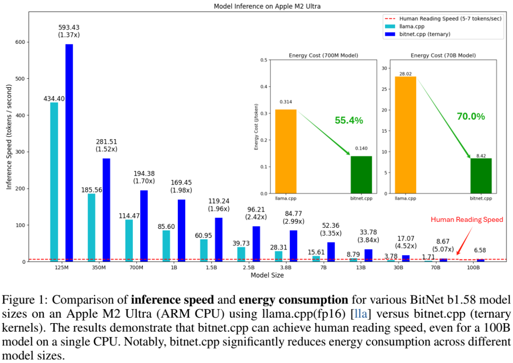
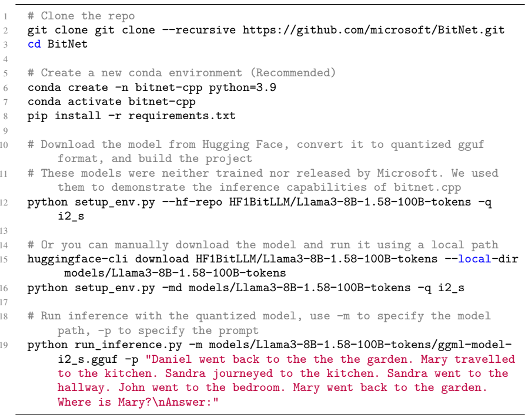
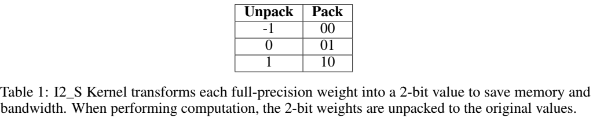
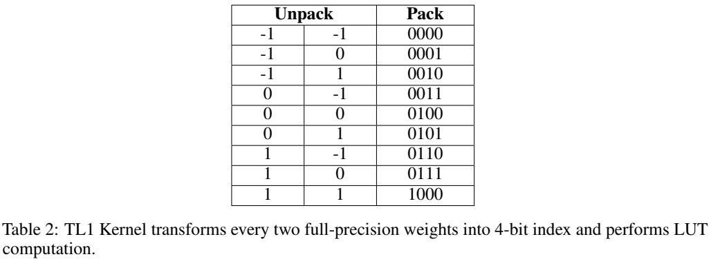
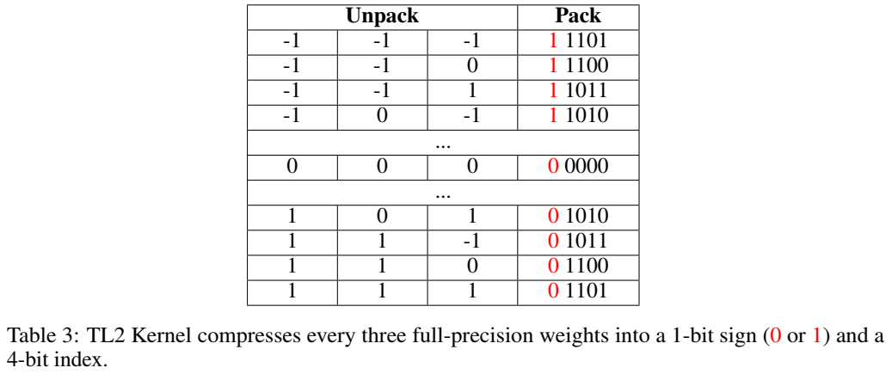

论文阅读四十二：1位AI架构：部分1.1，基于GPU的快速无损BitNet b1.58推理
1位大语言模型（LLM）的最新进展，如BitNet[WMD+23]和BitNet b1.58[MWM+24]，为提高LLM在速度和能耗方面的效率提供了一种有前景的方法。这些发展还使本地LLM能够在各种设备上部署。在这项工作中，我们介绍了bitnet.cpp，这是一个量身定制的软件栈，旨在释放1位LLM的全部潜力。具体来说，我们开发了一组内核来支持CPU上三进制BitNet b1.58 LLM的快速无损推理。大量的实验表明，bitnet.cpp在各种型号的CPU上实现了显著的加速，在x86 CPU上从2.37倍到6.17倍不等，在ARM CPU上从1.37倍到5.07倍不等。该代码可在 https://github.com/microsoft/BitNet 上获得。

bitnet.cpp
bitnet.cpp是1位LLM（例如bitnet b1.58模型）的推理框架。它提供无损推理，同时优化速度和能耗。bitnet.cpp的初始版本支持CPU上的推理。
如图1所示，bitnet.cpp在ARM CPU上实现了从1.37倍到5.07倍的加速，较大的型号获得了更大的性能提升。此外，它还将能耗降低了55.4%至70.0%，进一步提高了整体效率。在x86 CPU上，速度提高了2.37倍至6.17倍，能耗降低了71.9%至82.2%。此外，bitnet.cpp可以在单个CPU上运行100B bitnet b1.58模型，实现与人类阅读相当的速度（每秒5-7个令牌）[Bry19]，从而显著提高了在本地设备上运行LLM的潜力。
要开始使用bitnet.cpp进行推理，请执行以下步骤：

1.58位模型的优化内核
bitnet.cpp提供了一套优化的内核，包括I2_S、TL1和TL2。这些内核旨在在x86和ARM架构上快速无损地推断1.58位模型。

I2_S内核采用一般的乘加方式进行矩阵乘法。如表1所示，它将每个全精度权重离线转换为2位表示。
在计算过程中，它将权重转换回其原始值，并执行普通的GEMV操作。我们建议在有足够线程的情况下使用它，因为它允许编译器生成高效的流水线指令序列。

TL1-Kernel通过将每两个全精度权重打包成4位索引来对其进行预处理（见表2），并将其相应的激活预计算为32=9的值。索引值对被存储在查找表中以执行LUT计算[PPK+22，WCC+24]。GEMV处理使用int16 LUT并通过加法进行累积。我们建议在为大型模型提供服务时，将其与有限数量的线程一起使用。

TL2内核与TL1类似。主要区别在于，它将每三个权重压缩成一个5位索引，而TL1将每两个权重压缩为一个4位索引。因此，TL2实现了比TL1更高的压缩比。我们建议在内存或带宽有限的环境中使用它，因为它采用LUT，与TL1内核相比，模型大小减少了1/6，从而降低了带宽要求。
未来工作
我们正在扩展bitnet.cpp，以支持更广泛的平台和设备，包括移动设备（如iPhone和Android）、NPU和GPU。未来，我们还将致力于1位LLM培训优化。此外，我们对1位LLM的定制硬件和软件栈的共同设计感兴趣。